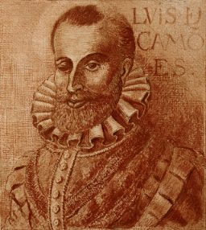

Os Lusíadas
- IAs armas e os barões assinalados…
- IIJá neste tempo o lúcido Planeta…
- IIIAgora tu, Calíope, me ensina…
- IVDepois de procelosa tempestade…
- VEstas sentenças tais o velho honrado…
- VINão sabia em que modo festejasse…
- VIIJá se viam chegados junto à terra…
- VIIINa primeira figura se detinha…
- IXTiveram longamente na cidade…
- XMas já o claro amador da Larisséia…
Retrato de Camões por Fernão Gomes (séc. XVI), via Wikimedia Commons — domínio público.